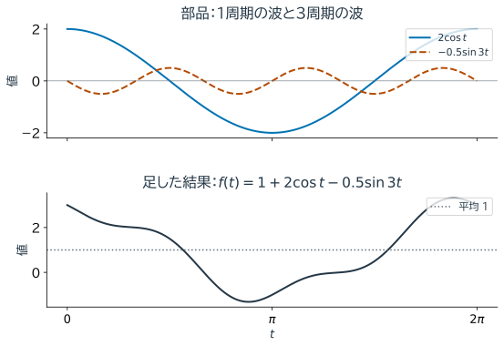
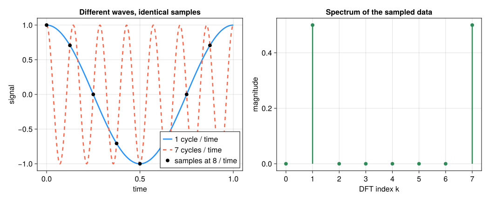

13. Fourier解析とFourier回帰#
第12章のSVDはデータに適した方向を求めた。本章では、あらかじめ決めた波を使って時間信号を表す。例えば毎日の気温の変化に、1日周期とその半分の周期がどの程度含まれるかを調べたい。
Fourier解析は、周期的な関数やデータを正弦波・余弦波の重ね合わせとして表す。本章では、連続関数のFourier級数、離散Fourier変換（DFT）、ノイズを含むデータに対するFourier回帰を区別して扱う。
13.1. この章の目標#
三角関数の直交性からFourier係数を説明できる。
Fourier級数とDFTの対象の違いを説明できる。
DFT係数の添字と周波数を対応させ、逆変換で元のデータを確認できる。
標本化により異なる波を区別できなくなる現象を説明できる。
Fourier回帰を線形最小二乗問題として実装できる。
13.2. Fourier級数#
まず \(f(t)=1+2\cos t-0.5\sin3t\) を考える。平均1の上に、1周期の余弦波と3周期の正弦波が重なる。係数2と \(-0.5\) は、それぞれの波の重みである。


図 13.1 上段の青い実線は1周期、橙色の破線は3周期の波である。同じ時刻の二つの高さに1を足すと、下段の高さになる。例えば \(t=0\) では \(2+0+1=3\)、\(t=\pi\) では \(-2+0+1=-1\)。係数は各部品の重みを決める。#
周期 \(2\pi\) の区分的に滑らかな関数は、三角関数の級数
と表すことを考える。異なる整数周波数の波の積を \([0,2\pi]\) で積分すると0になり、同じ波の二乗の積分は \(\pi\) になる（定数項は別扱い）。例えば級数に \(\cos(\ell t)\) を掛けて積分すれば、\(a_\ell\) の項だけが残る。この直交性から
となる。\(a_0/2\) が平均なので、最初の例では \(a_0=2\) である。不連続点での級数の収束先は左右の極限の平均となり、有限項では跳びの近くに振動が残ることがある。有限個の項で止めれば、三角多項式による近似である。滑らかな周期関数ほど係数が速く減衰し、少数の周波数でよく近似できる。
function fourier_coefficients(f,K; nquad=4000)
nquad > 2K && K ≥ 0 || error("項数に対して十分な評価点を用意してください")
h = 2π/nquad
t = (0:nquad-1).*h
values = f.(t)
a0 = 2sum(values)/nquad
a = [2sum(values.*cos.(k.*t))/nquad for k in 1:K]
b = [2sum(values.*sin.(k.*t))/nquad for k in 1:K]
return a0,a,b
end
f(t) = 1+2cos(t)-0.5sin(3t)
a0,a,b = fourier_coefficients(f,4)
println("a0 = ", a0)
println("a = ", round.(a,digits=8))
println("b = ", round.(b,digits=8))
a0 = 2.0000000000000004
a = [2.0, 0.0, -0.0, 0.0]
b = [-0.0, 0.0, -0.5, 0.0]
13.3. 離散Fourier変換#
前節では関数式を数値積分して係数を求めた。測定済みの有限個の値しかない場合は、有限の変換でそれらを表す。
複素数 \(i\) は \(i^2=-1\) を満たし、Eulerの公式 \(e^{i\theta}=\cos\theta+i\sin\theta\) により、余弦と正弦を一つの指数にまとめられる。以下の cis(θ) はこの複素指数で、時間積分のEuler法とは別の話である。
\(N\) 個の等間隔データ \(x_0,\ldots,x_{N-1}\) のDFTを
と定義する。逆変換は
である。和が有限なので、これは \(N\) 個のデータの別の表現であり、逆変換すれば丸めを除いて元へ戻る。\(k=0\) の係数はデータの総和なので、\(X_0/N\) が平均となる。数学の添字は0始まり、Juliaは1始まりなので、コードでは \(X_k\) を X[k+1] と書く。
係数の正規化や指数の符号には複数の流儀があるため、変換と逆変換を対で確認する。
function dft(x)
N = length(x)
return [sum(x[n+1]*cis(-2π*k*n/N) for n in 0:N-1) for k in 0:N-1]
end
function idft(X)
N = length(X)
return [sum(X[k+1]*cis(2π*k*n/N) for k in 0:N-1)/N for n in 0:N-1]
end
N = 16
t = 2π.*(0:N-1)./N
x = @. 1+2cos(t)-0.5sin(3t)
X = dft(x)
xrec = real.(idft(X))
println("再構成誤差 = ", maximum(abs.(x-xrec)))
println("大きいDFT係数の周波数index k = ", findall(abs.(X).>1e-10) .- 1)
再構成誤差 = 9.658940314238862e-15
大きいDFT係数の周波数index k = [0, 1, 3, 13, 15]
直接計算は \(O(N^2)\) だが、高速Fourier変換（FFT）は同じDFTを \(O(N\log N)\) で計算するアルゴリズムである。
DFTの再構成が正確でも、測定点の間の連続信号まで一意に分かるわけではない。
13.3.1. 添字と周波数を対応させる#
標本間隔を \(\Delta t\) とすると、記録の長さは \(T=N\Delta t\) で、周波数の間隔は \(1/T\) である。\(k/T\) が対応する周波数だが、\(k>N/2\) は \((k-N)/T\) という負の周波数として読める。実数データでは正負の係数が複素共役になる。本文の \(N=16\) の例で現れる \(k=0,1,3,13,15\) は、平均と、正負の1周期・3周期の波に対応する。
13.4. 標本化とエイリアシング#
標本化周波数は \(f_s=1/\Delta t\) である。\(f_s/2\) を超える波は、標本点上では区間 \([-f_s/2,f_s/2]\) 内の別の周波数と区別できなくなる。これがエイリアシングである。帯域が \(f_s/2\) 未満に制限されているという仮定が、連続信号を復元する際に必要になる。
DFTは観測区間を周期的に繰り返したデータとして扱う。区間の両端が滑らかにつながらない、または信号の周期が観測区間に整数個入らない場合、エネルギーが近隣の周波数へ広がるspectral leakageが起こる。window関数はleakageを抑えるが、周波数分解能との交換を伴う。
sampling_rate = 8.0
sample_times = (0:7)./sampling_rate
x_low = cos.(2π .* sample_times)
x_high = cos.(2π .* 7 .* sample_times)
println("周波数1と7の標本値の最大差 = ", maximum(abs.(x_low-x_high)))
println("周波数1の標本値 = ", round.(x_low,digits=4))
周波数1と7の標本値の最大差 = 3.1086244689504383e-15
周波数1の標本値 = [1.0, 0.7071, 0.0, -0.7071, -1.0, -0.7071, -0.0, 0.7071]
Show code cell source
# 初回のみ: import Pkg; Pkg.add("CairoMakie")
using CairoMakie
CairoMakie.activate!(type="svg")
set_theme!(Theme(fontsize=16, linewidth=2.5))
figure_dir = isdir("pic") ? "pic" : joinpath("..", "pic")
sampling_rate = 8.0
low_frequency = 1.0
high_frequency = sampling_rate-low_frequency
sample_times = collect(0:7) ./ sampling_rate
sample_values = cos.(2π .* low_frequency .* sample_times)
dense_time = range(0.0, 1.0, length=1200)
N_alias = length(sample_times)
spectrum_alias = [abs(sum(sample_values[n+1] * exp(-2π*im*k*n/N_alias)
for n in 0:N_alias-1))/N_alias
for k in 0:N_alias-1]
fig_aliasing = Figure(size=(1050, 430))
ax_signal = Axis(fig_aliasing[1, 1]; xlabel="time", ylabel="signal",
title="Different waves, identical samples")
lines!(ax_signal, dense_time, cos.(2π .* low_frequency .* dense_time);
color=:dodgerblue, label="1 cycle / time")
lines!(ax_signal, dense_time, cos.(2π .* high_frequency .* dense_time);
color=:tomato, linestyle=:dash, label="7 cycles / time")
scatter!(ax_signal, sample_times, sample_values; color=:black, markersize=11,
label="samples at 8 / time")
axislegend(ax_signal; position=:rb)
ax_spectrum = Axis(fig_aliasing[1, 2]; xlabel="DFT index k", ylabel="magnitude",
title="Spectrum of the sampled data", xticks=0:7)
for k in 0:N_alias-1
lines!(ax_spectrum, [k, k], [0.0, spectrum_alias[k+1]]; color=:seagreen)
end
scatter!(ax_spectrum, 0:N_alias-1, spectrum_alias; color=:seagreen, markersize=11)
save(joinpath(figure_dir, "fourier_aliasing.svg"), fig_aliasing)
fig_aliasing


図 13.2 標本化周波数が8のとき、周波数1と7の余弦波は黒点で完全に一致する。離散データだけから両者を区別できないことがエイリアシングの本質である。右の縦軸は \(|X_k|/N\) で、\(k=1,7\) は正負の周波数1に対応する。各棒が0.5になるのは、振幅1の余弦波が正負二つの複素指数へ半分ずつ分かれるためである。#
13.5. Fourier回帰#
観測時刻が不等間隔、データに欠測やノイズがある、限られた周波数だけを使いたい場合は、DFTよりFourier回帰が自然である。
は係数に関して線形なので、第6章と同じ最小二乗問題 \(Ac\approx y\) として解ける。基本角周波数 \(\omega_0=2\pi/T_0\) と項数 \(K\) をモデルとして指定する。設計行列の列は、1、\(\cos(\omega_0t)\)、\(\sin(\omega_0t)\)、…の順に並ぶ。以下では \(\omega_0=1\)、\(K=3\) として、冒頭と同じ信号へ雑音を加えた80点から7個の係数を推定する。
using LinearAlgebra, Random
Random.seed!(42)
t = sort(2π.*rand(80)) # 不等間隔
y = 1.0 .+ 2cos.(t) .- 0.5sin.(3t) .+ 0.2randn(length(t))
K = 3
A = hcat(ones(length(t)),[g.(t) for k in 1:K for g in (t->cos(k*t),t->sin(k*t))]...)
c = A \ y
r = y-A*c
println("推定係数 = ", round.(c,digits=3))
println("残差RMS = ", norm(r)/sqrt(length(r)))
推定係数 = [1.006, 2.004, 0.014, 0.022, 0.006, 0.02, -0.484]
残差RMS = 0.18446870712926705
13.6. 係数の読み方と検証#
\(a_k\cos(k\omega_0t)+b_k\sin(k\omega_0t)\) は
とまとめられる。振幅だけでなく位相にも情報がある。
位相は波の横方向のずれを表す。振幅0の成分の位相は定まらない。
方法 |
入力 |
得られるもの |
|---|---|---|
Fourier級数 |
周期関数 |
直交性から定まる波の係数 |
DFT |
有限個の等間隔データ |
そのデータを再構成する有限の係数 |
Fourier回帰 |
観測時刻と値 |
指定した波の組合せによる最小二乗近似 |
13.7. まとめ#
本章のまとめ
Fourier解析では波の係数として信号を読む。FFTはDFTの高速な計算法であり、異なる変換ではない。係数の読み取りには、標本間隔、記録時間、正規化、正負の周波数の対応を確認する。逆変換でデータを再現できても、エイリアシングで失った情報は戻らない。
次の第14章では、時間変化の規則と空間パターンをデータから同時に推定する。
13.8. 演習#
本文の式・表・出力を使って説明してよい。
演習
波の係数：\(f(t)=1+2\cos t-0.5\sin3t\) の平均と、含まれる波を説明せよ。Fourier級数の定数係数 \(a_0\) が1ではなく2になる理由は何か。
同じ標本になる波：標本化周波数8で周波数1と7の余弦波を観測する。本文の図の黒点だけで両者を区別できるか。DFTを逆変換できることと、元の連続信号が分かることの違いを述べよ。
最小二乗との接続：\(y\approx c_0+a_1\cos t+b_1\sin t\) の設計行列の1行を書け。不等間隔の観測にもこの行を作れる理由を説明せよ。
13.9. 参考文献と関連する節#
Driscoll and Braun, Fundamentals of Numerical Computation, Trigonometric interpolation.